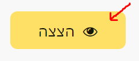

ממליץ להוסיף במערכת ההגשה לאילו תרגילים ישנם הערות של בודק אוטומטי ונדרשות תיקון
על מנת שבעת הגשה תדע היכן נדרש תיקון במקום להיכנס אחד אחד ולבדוק.
תבדוק, הוסיפו ‘הודעות’…
לייק 1
האם אפשר לשנות את הצבע של הכפתור לאדום במידה ויש הערות לתיקון? (בנוסף ל’הודעות’)

טכנית אני יכול, פרקטית אני מעדיף שלא. זה יצור חוויה יחסית עמוסה בעין
לייק 1

סתם 20 סתם 20 סתם 20
לייק 1
תודה על ההצעה ט’ו, אם יש לכם רעיונות מוזמנים להעלות 
האמת שהיום חשבתי על זה שהיה מעולה אם כאשר נכנסים לדף של “תרגיל בדוק” במערכת ,
בנוסף על הכותרת של מספר התרגיל ושמו, יצויין גם מספר המחברת (אפילו בקטן בצד או משו)
ככה אפשר להשאיר את הדף הזה פתוח, ולהיכנס למחברת במקביל. (במקום לצאת לבדוק איזה מחברת, להיכנס חזרה )
מה אומר ?

{kind=link}
הסבר על למה “מנשק” ולא “ממשק” - זה מישהו שרושם על זה שהוא מעדיף ממשק חחח אבל הוא מסביר שם את ההבדלים.
https://www.safa-ivrit.org/form/minshak.php
2 לייקים
לגמרי אפשרי
אוסיף כשיהיה זמן 
לייק 1
דבר ראשון המון תודה על כל השיפורים וייעולים!
גם תגית ‘הודעות’ במערכת הבדיקות עוזרת מאוד, גם הבודק האוטומטי שודרג ויש המון איך ללמוד ממנו, תודה רבה על הבדיקה השבוע (6) הרגשתי שאני משתפרת ומקבלת פידבק על המון תרגילים. ושוב תודה על הקורס הזה אני ממש נהנית!
ועכשיו נקודה שאני מתקשה בה, ברגע שהעליתי את ויש לי בדיקה אוטומטית, אני מדברת על הבדיקות שמופיעות מתחת לתרגיל ומתייחסות לאיך הקוד עובד, אני קצת מבולבלת כל פעם שמגיעה הודעה, אני לא מבינה עד הסוף את אופן הניסוח וכל בדיקה אוטומטית אני רצה לפורום לחפש.
המון תודה ל @orpazf על הנושא הזה:
אני משתמשת בו המון, שואלת שאלות ומקבלת מענה מהיר.
עם זאת אני חוששת שאני חוזרת על שאלות שנשאלו, וקשה לחפש לפני האם זה נשאל (כי הרוב זה צילומי מסך)
הקושי שלי הוא שבעצם אני לא מבינה עדיין את תבנית הבודק האוטומטי ואיך להתמודד מולו לבד.
המון תודה,
גילי
לייק 1
קיבלנו, ובשבוע הבא אני מאמין שיהיו יותר הודעות מילוליות לצד הפלט המוזר למטה
לייק 1